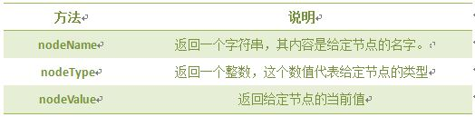
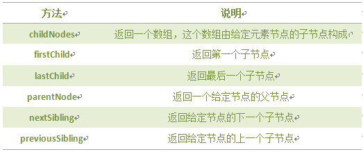

HTML文档可以说由节点构成的集合，DOM节点有:
1. 元素节点：上图中<html>、<body>、<p>等都是元素节点，即标签。
2. 文本节点:向用户展示的内容，如<li>...</li>中的JavaScript、DOM、CSS等文本。
3. 属性节点:元素属性，如<sa>标签的链接属性href="http://www.imooc.com"。
节点属性： 
遍历节点树： 
DOM操作:前两个是document方法